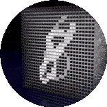
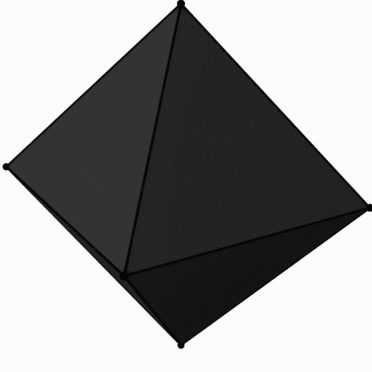
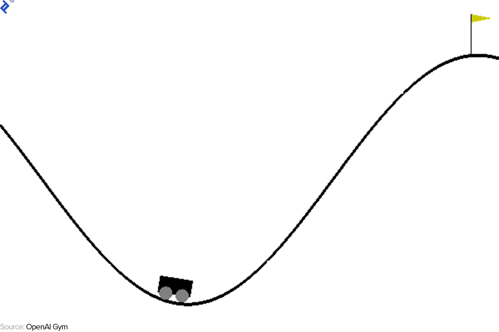
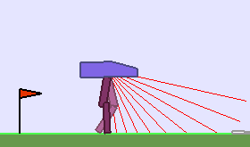
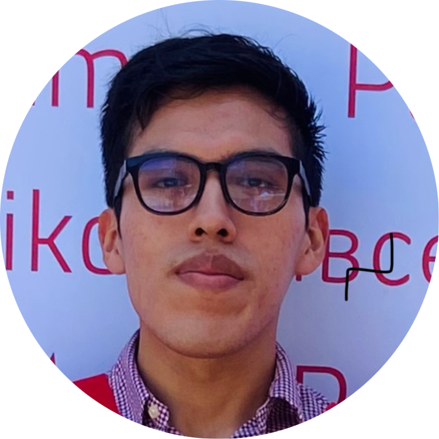

Contenido
En la primera parte aprenderás modelos de Deep Learning con ejercicios prácticos de programación. En la segunda parte aplicarás tus conocimientos en un proyecto que será evaluado por un jurado de expertos.
Fundamentos
de Deep Learning

Exploraremos las redes neuronales desde los fundamentos matemáticos, armaremos una red neuronal entendiendo su funcionamiento con Python puro y tambien con PyTorch y TensorFlow. Tambien cubriremos conceptos como la optimización y regularización.
Deep
Computer Vision

Para aplicar Deep Learning en imágenes es empezaremos con la teoria de las Convolutional Neural Networks (CNN), revisaremos las arquitecturas clásicas y aplicaremos Transfer Learning.
Deep
Generative Modelling
Continuaremos con el estado del arte explorando desde los espacios latentes, la teoría de las Generative Adversarial Networks (GANs) y sus arquitecturas.
Deep
Sequence Modeling
Descubre cómo las redes neuronales pueden entender y generar secuencias, transformando industrias enteras mediante el modelado de secuencias con redes neuronales recurrentes (RNNs), Backpropagation Through Time, y arquitecturas avanzadas como GRU y LSTM.
Large
Language Models
Explora los modelos de lenguaje más avanzados, capaces de comprender y generar texto con una fluidez asombrosa, y aprende sobre sus aplicaciones y desafíos éticos, estudiando modelos de lenguaje grandes (LLMs) como BERT, la familia GPT, entre otros.
Graph
Neural Networks

Introducción al aprendizaje en grafos, donde descubrirás cómo las máquinas pueden aprender de estructuras complejas como redes sociales y sistemas biológicos, utilizando técnicas de paso de mensajes neuronales y redes de grafos generales.
Reinforcement
Learning

Aprende cómo las máquinas pueden tomar decisiones y aprender de la experiencia. Aprenderás sobre procesos de decisión de Markov (MDP), enfoques basados en modelos (Model-Based Approaches) y enfoques sin modelos (Model-Free Approaches) como Monte Carlo (MC) y aprendizaje temporal-diferido (TD).
Deep
Reinforcement Learning

Descubre cómo las redes neuronales permiten a las máquinas dominar tareas complejas como nunca antes, mediante la aplicación de redes neuronales profundas en aprendizaje por refuerzo con técnicas como Deep Q-Networks (DQN) y métodos Actor-Critic, incluyendo Policy Gradients.
New
Frontiers
Mantente a la vanguardia de la inteligencia artificial explorando las fronteras más avanzadas, abarcando la multimodalidad y otras técnicas avanzadas de Deep Learning.
Proyecto Final
Aplica todo lo aprendido en un emocionante proyecto final demostrando tu dominio en Deep Learning.
mentores
Felipe San Martin🇨🇱🇺🇸
Felipe es Ingeniero Civil Eléctrico y Master en Ingeniería Eléctrica de la Universidad de Chile. Trabajó durante más de 4 años en proyectos de I+D en temas de Computer Vision (CV), desarrollando soluciones para la industria desde la academia. Dentro de su experiencia profesional, también ha trabajado en dos empresas de tecnología chilenas: TOC Biometrics, empresa dedicada a la verificación de identidad, desarrollando modelos de CV; y Anastasia, empresa de Inteligencia Artificial, desarrollando un SaaS que permite optimizar las operaciones de pequeñas y medianas empresas mediante la automatización de procesos y predicción de demanda. Además, ha sido parte del equipo docente del curso de robótica móvil Duckietown Engineering Chile en la Universidad de Chile, enfocándose especialmente en el área de CV y Machine Learning. Felipe fue presidente de Corporación Cuac, organización sin fines de lucro que busca enseñar y realizar divulgación científica sobre temas de Robótica, Inteligencia Artificial y Ciencia de Datos, con el fin de democratizar dicho conocimiento. Actualmente se desempeña como Research Assistant en el Human Sensing Lab del Instituto de Robótica de Carnegie Mellon University.
Jaume Brossa 🇪🇸
Jaume es Matemático especializado en la aplicación de modelos de Deep Learning a gran escala. Empezando especializándose en Computer Vision en el sector aeronáutico, seguidos del sector del Agua y al sector Dental, construyendo y liderando productos desde cero basados en datos y tecnologías de Deep Learning. Actualmente Jaume es Machine Learning Research Engineer en Apple donde ha trabajado en los proyectos de Podcast Transcripts y Insight para Apple TV.
Danae Sanchez 🇲🇽🇩🇰
Danae Sánchez es Postdoc en el grupo de procesamiento de lenguaje natural en la Universidad de Copenhagen. Tiene un doctorado (Ph.D) y una maestría (MSc) en Ciencias de la Computación por la Universidad de Sheffield, y una Licenciatura en Ingeniería en Computación del Instituto Tecnológico Autónomo de México. Ha trabajado como Research Associate en el grupo de procesamiento de lenguaje natural en la Universidad de Sheffield y Applied Scientist Intern en Amazon Alexa Shopping en Londres. Sus intereses de investigación incluyen el procesamiento del lenguaje natural, el modelado de visión y lenguaje y la aplicación de métodos computacionales en las ciencias sociales.
Stanley Salvatierra 🇧🇴
Stanley Salvatierra es un ingeniero de software con vasta experiencia en DevOps, machine learning y desarrollo full-stack. Reconocido como Innovador Menor de 35 por MIT Technology Review, ha trabajado con AWS, Kubernetes, y Docker. Voluntario activo en JCI y el Data Science Club en Bolivia, Stanley Salvatierra se dedica a la innovación y actualmente en el desarrollo y la integración de modelos de Vision Artificial y LLMs (Large Language Models) en el ámbito empresarial.
Karina Pérez 🇲🇽
Obtuvo el grado de Doctor y M.C. con enfoque en Visión por Computadora e IA en el Instituto Politécnico Nacional de México. Realizó estancias de investigación en Microsoft Research (USA), así como en la UEC de Tokio (Japón) y en la Universidad de Burdeos (Francia), al igual que estancias posdoctorales en la Universidad de Warwick (UK) y en la Universidad Nacional Autónoma de México. Actualmente, es miembro del Sistema Nacional de Investigadores, catedrática en la Universidad Panamericana en México y Científico de Datos Senior en AI Factory, BBVA.
Juan Gómez 🇪🇸
Juan Gómez Romero is a Professor in the Department of Computer Science and Artificial Intelligence at the University of Granada. His research focuses on the application of Artificial Intelligence and Machine Learning in various areas, such as energy efficiency and misinformation characterization. Previously, he was a professor at Carlos III University of Madrid and a visiting researcher at the Data Science Institute of Imperial College London.
Adrián Arnaiz 🇪🇸🇩🇪

Adrián Arnaiz Rodríguez es estudiante de doctorado en ELLIS Alicante. Sus supervisores de doctorado son Nuria Oliver (ELLIS Alicante) y Manuel Gómez Rodríguez (Max Planck Institute for Software Systems). Es Licenciado en Ingeniería Informática (2019, Universidad de Burgos) y Máster en Ciencia de Datos e Inteligencia Artificial (2021, Universitat Oberta de Catalunya) realizando la tesis de MSc con Baris Kanber (University College London) en neuro-imagen médica. Comenzó su carrera investigadora en la Universidad de Burgos, usando ML para la salud y Ciencia de Redes. Sus temas actuales de doctorado son la justicia algorítmica en la IA, la teoría de grafos para mejorar la ética, la responsabilidad y la transparencia en la toma de decisiones algorítmicas. Tiene diversas publicaciones en el campo y ha impartido tutoriales sobre grafos en grandes conferencias como ICML o LOG. También ha sido ponente de diversas charlas como en la Universidad de Notre Damme, en la Camara de Comercio de Alicante o una charla con miembros del parlamento europeo.
Oscar Contreras 🇧🇴
Oscar Contreras es Ingeniero de Sistemas de profesión con grado de Maestría en Informática Avanzada por parte de la Universidad
Oscar Contreras es Ingeniero de Sistemas de profesión con grado de Maestría en Informática Avanzada por parte de la Universidad de Brístol (Reino Unido). Cuenta con amplia experiencia en el ámbito de la tecnología en los ámbitos de Ingeniería de Software y Big Data. Actualmente ejerce como docente universitario a nivel pre y postgrado en diversas universidades bolivianas, como por ejemplo la UCB, EMI y Univalle.
Mercè Vintró 🇪🇸🇬🇧
Mercè Vintró Ricart is the manager of the Natural Language Processing (NLP) team within Shell’s Digital Innovation organization. She leads a research team specialized in NLP/Generative AI that focuses on early-stage ideation, Proof-of-Concepts and MVPs. She manages a broad portfolio of NLP projects across Shell and works closely with technology partners. Mercè first joined Shell in 2018 as a Senior NLP Data Scientist and has since grown this nascent capability in Shell into a mature program. She is based in Shell Centre, London and her team is spread across the UK, Netherlands and India.
Hodei Calvo 🇪🇸
Hodei Calvo Soraluze es graduado en física con la especialidad de física fundamental. Cursó el MSc en Ingeniería Computacional y Sistemas Inteligentes en la Universidad del País Vasco (España). Cuenta con experiencia en proyectos I+D en centros tecnológicos como Ceit y Tecnalia en temas de machine learning, data science, NLP, control y reinforcement learning. Actualmente está cursando su PhD en técnicas de aprendizaje por refuerzo para el control de drones y ejerce como docente en la Universidad de Deusto. Entusiasta de otros campos afines como la computación cuántica, bioinformática, ciberseguridad o finanza algorítmica..
Juan G. Gomez 🇨🇴🇲🇽

Juan Guillermo co-organizes several global and local events, such as GDG Cali, startup weekend Colombia and free software. He has been involved in tech and software programming for the past 20 years. He attends more than 30 events per year as a guest speaker throughout Latin America, where he speaks about mobile, android, cloud, firebase, Kotlin, software architecture, entrepreneurship, and innovation. He has been a programmer, software architect, technology leader, university professor, and advisor in technology companies and systems departments. Now, he is a tech lead in WordBox. Juan is GDE (Google Developer Expert) in Firebase, On-Device Machine Learning, GCP, and Kotlin. He holds a BS in System Engineering, and an MS in Software Engineering at Universidad San Buenaventura Cali.
Fernando Silva 🇧🇴🇪🇸
Fernando es ingeniero de Sistemas con postgrado en Inteligencia Artificial de la Universidad de Chile y una maestría MSc en Inteligencia Artificial por la Universidad Pompeu Fabra Barcelona, lleva desde el 2019 en el área de Inteligencia Artificial. Inició como mentor de Python y Machine Learning bajo la coordinación del Centro Cultural de España. Trabajó como Machine Learning Engineer, Data Scientist y Artificial Intelligence Enginner en entidades en Europa y Latinoamérica. Actualmente trabaja como Artificial Intelligence Engineer en una Startup desarrollando la implementación de modelos avanzados. Ha participado y ganado en varios concursos, siendo el más destacado el primer lugar en una de las categorías de la hackathon de Facebook F8 en Silicon Valley el 2019. A su vez ha sido lider de comunidades con el objetivo de democratizar la inteligencia Artificial. También se desempeña como embajador de deeplearning.ai de Andrew Ng con su programa de Pie & AI.
Inscripción
Duración del curso: 13 de Agosto - 26 de Octubre
Martes, Jueves y Sábado
Modalidad: Online
Horario: Martes (20:30 – 22:00), Jueves (19:00 – 22:00), Sábado (09:00 – 12:00) UTC – 4
¡Incluye Certificado con carga horaria avalado internacionalmente!.
¡Aprovecha el descuento de Preventa! Descuento de 30% hasta el 30 de Junio (Un solo pago)

Preguntas y respuestas frecuentes
¿El programa incluye certificado?
¡Sí! Al finalizar las clases los alumnos que realicen el proyecto en el Demo Day recibirán un certificado avalado internacionalmente.
¿Cuántos pagos hay que realizar para confirmar mi inscripción?
¡Solo un pago! Aprovecha los descuentos.
¿Cuál es la edad mínima para participar en el programa?
La edad mínima para participar del programa es de 18 años.
¿Puedo participar del programa si no tengo ningun conocimiento de programación?
¡Sí! Facilitaremos nuestro material de nivelación para los inscritos.
¿El programa está enfocado a solo personas del área de informática e ingeniería de sistemas?
No, todos son bienvenidos a participar del programa.
¿Aún tienes dudas?, pulsa aquí.